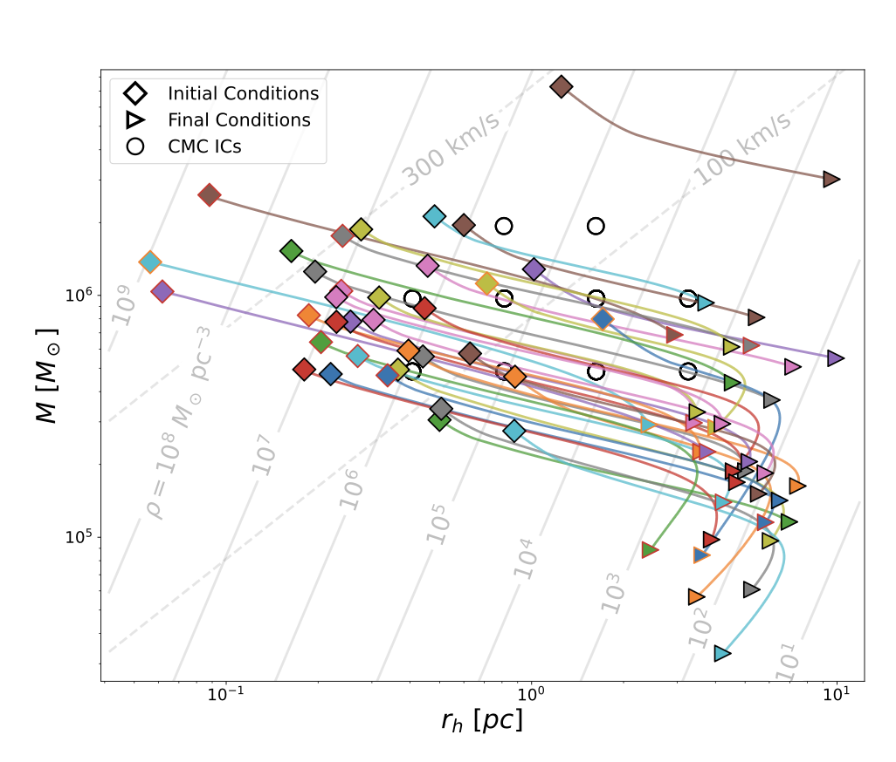

How dense were globular clusters when they formed? [Dickson, VHB, et al. 2026a]

By coupling rapid cluster evolution models with multimass equilibrium models, we built a fast framework that fits present-day observations — number density profiles, proper motions, line-of-sight velocities and stellar mass functions — and can infer what a cluster looked like at birth. We validated the method against a large grid of star-by-star Monte Carlo simulations and applied it to a sample of 40 Milky Way clusters, finding initial half-mass densities with a median of 106.4±0.9 M☉ pc−3, denser than any young massive cluster forming in the Local Universe today, but in line with the compact proto-globular clusters now being found at high redshift. The same fits point to bottom-light stellar initial mass functions and relatively small present-day black hole mass fractions (≲ 1.5%).